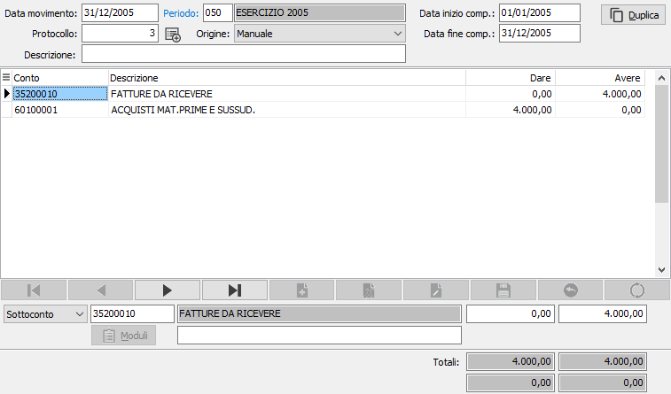

Gestione movimenti di rettifica
Il programma è disponibile solo nella versione Enterprise che ne prevede la gestione.
Il programma consente di registrare scritture contabili stimate per consentire una più corretta elaborazione dei bilanci infrannuali. È quindi possibile, quando l’utente lo ritenga opportuno, inserire scritture di rilevazione rimanenze di magazzino, di imputazione di quote accantonamento pro quota, di ratei e di risconti che non costituiscono scritture contabili effettive e pertanto che non potranno essere stampate sul libro giornale, ma che sono selezionabili per l’elaborazione dei bilanci. I movimenti di rettifica vengono registrati infatti in una propria tabella movimenti di rettifica, e dispongono di una propria numerazione di protocollo.
L’inserimento di movimenti di rettifica avviene con modalità analoghe a quelle dell’inserimento dei movimenti di prima nota contabile. I movimenti di rettifica inseriti permangono residenti fino a quando non vengono modificati o cancellati. Pertanto è possibile, nei mesi successivi, modificare semplicemente gli importi dei movimenti di rettifica inseriti precedentemente.
Per la variazione e la cancellazione è possibile procedere facendo un doppio clic sul campo data movimento oppure premendo il tasto di zoom, si apre la finestra di selezione per ricercare il movimento di rettifica da cancellare o da modificare. Per i movimenti di tipo manuale è attivo il pulsante Duplica per inserire un movimento uguale a quello visualizzato.
Gli utenti che utilizzano il modulo “Gestione Cespiti” possono, tramite appositi programmi, effettuare la simulazione degli ammortamenti in dodicesimi, ed introdurre automaticamente nella tabella movimenti di rettifica i valori di quote ammortamento e accantonamento ai fondi di ammortamento allo scopo di elaborare bilanci rettificati che ne tengano conto.
Il pulsante a destra del protocollo, se attivo, consente la contabilizzazione del movimento di rettifica. Il pulsante è attivo solo su movimenti inseriti manualmente.
Sulle righe il pulsante Modulo consente di accedere alla finestra relativa ai dati della contabilità analitica, se gestito il modulo e se il sottoconto lo prevede.
Accedendo al programma, appare la seguente maschera video:

I movimenti di rettifica possono essere selezionati nel programma di Stampa bilanci correnti.